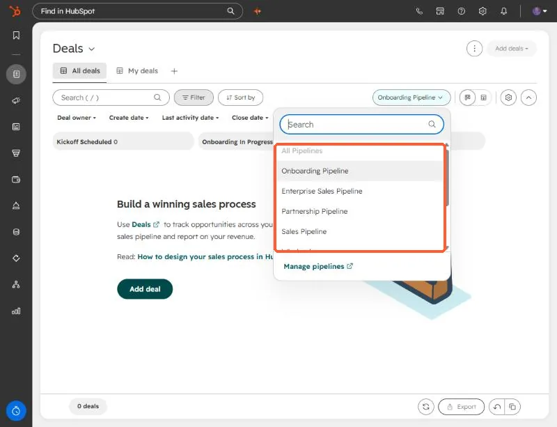
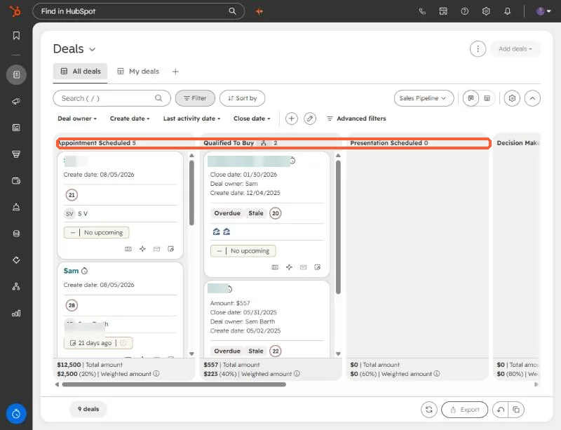

Short answer
Export the board, then decide where every column lands: boards to pipelines, cards to deals, organizations to companies, people to contacts, and the card text to notes. Create anything missing, such as a custom property for organization type, run a dry run that reports counts without writing, load one piece at a time, and verify the deal count in each pipeline. For a marketing consultancy's board I mapped 5 pipelines, 58 open cards, 54 companies, 12 contacts, and 36 notes.
1. Map before you move anything
A marketing consultancy managed its work on a card board and wanted it in HubSpot. The export was a single spreadsheet, so the first job was a mapping table. This is the shape I used:
- Boards become pipelines (five in this case).
- Cards become deals, with owner, priority, close date, and associations carried over.
- Organizations become companies, with a custom property for organization type.
- People become contacts.
- Card text becomes a note on the deal, so nothing typed in the card is lost.
Open the Deals page and use the pipeline picker to see the pipelines you already have. Each pipeline's stages will be the columns of its board.


The number of pipelines you can create depends on your subscription. Look at the limit before you design five of them.
2. Create the pipelines and the missing property
Create the pipelines with stages that match the board, plus any custom property such as Organization Type. Check that none of them already exist, so you do not duplicate setup. The result should look like the board view, one column per stage.


3. Dry run, then load in pieces
My dry run wrote nothing and only reported what it would create: 5 pipelines, 58 open cards as deals, 54 companies, 12 contacts. Then I loaded one piece at a time, with approval for each, in this order:
- Pipelines and the Organization Type property.
- Companies, then contacts.
- Deals with owners, priority, close dates, and associations.
- Notes with the card text.
The loads went through a private app and the API, but an import file works for each step if you have the Record IDs for associations.
4. Verify
- Open each pipeline and compare its deal count with the dry run.
- Spot check owners, close dates, and associations on a few deals.
- Check that notes carry the card text.
I loaded this into the client's own portal, so I have no screenshots of that portal. The screenshots above are from a demo portal.